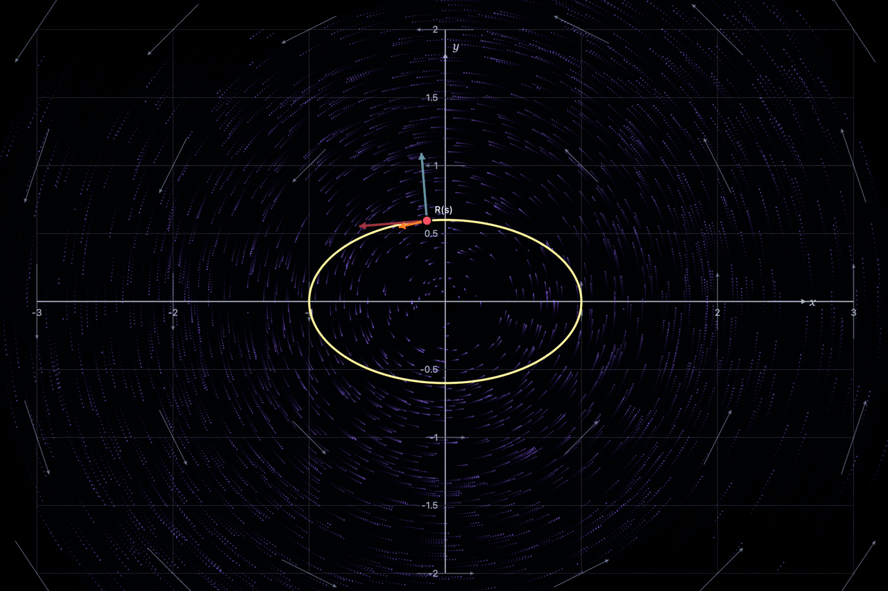
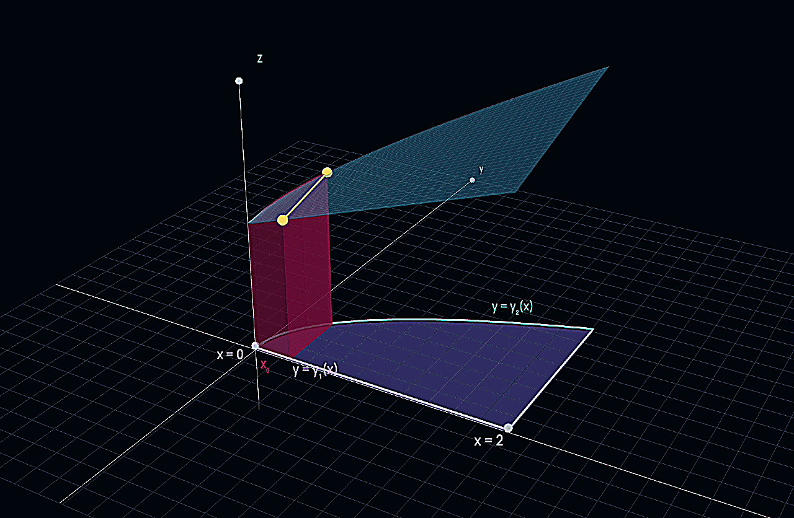
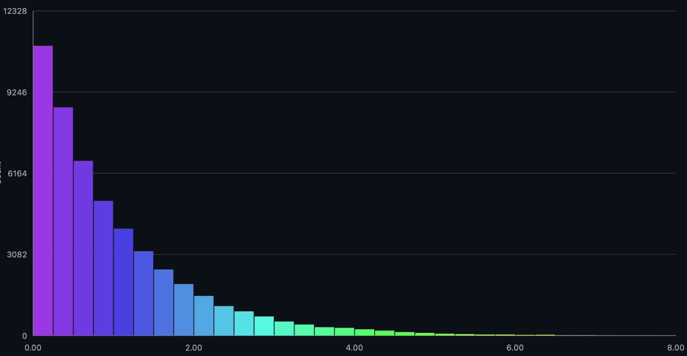

Interactive Mathematics Lab
Explore mathematical ideas through interactive simulations, visual experiments, and approximation.
Calculus

Riemann Sums
Visualize how partitions and sample points produce approximations to definite integrals.
Open simulation →
Approximating π with Polygons
Compare inscribed and circumscribed regular polygons as the number of sides increases.
Open simulation →
2D Work and Flux Integrals
Graph a 2D vector field and a curve. See how the field affects the work along the curve and the flux across it!
Open simulation →
Double Integrals: Iterated Integrals Visualizer
Visualize how to construct iterated integrals over special regions to evaluate double integrals.
Open simulation →Statistics
Law of Large Numbers: Fair Coin Flip
Explore how the experimental average approaches the expected value as the number of independent trials increases.
Open simulation →
Central Limit Theorem (CLT)
See how the distribution of sample means approaches a normal distribution as sample size increases.
Open simulation →